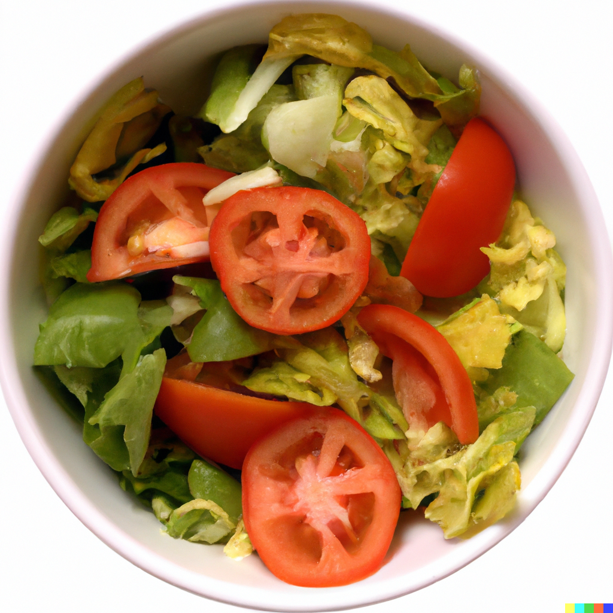

Week #1
Salad
Created by Isaac Lewis
1/4/2023
Here's a recipe to make my signature salad.

Image provided by DALLE 2. Prompted by yours truly with the prompt "a lettuce and tomato salad in white bowl, realistic image, shot from above where we can see the entire contents of the bowl"
Ingredients:
Steps:
- Cut the lettuce head until sufficient size has been reached
- Slice or medium dice the tomato
- Combine in bowl and toss
- Serve and enjoy!
similar recipes
source (get it, because I made it up, the source is this webpage)